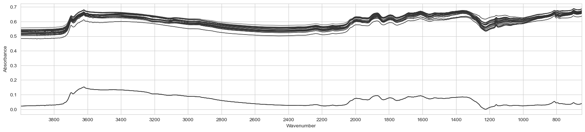

The autoreload extension is already loaded. To reload it, use:
%reload_ext autoreloadThe autoreload extension is already loaded. To reload it, use:
%reload_ext autoreloadKSSL, LUCAS, … larger spectral library are now accessible through a single API endpoint provided by OSSL.
download (url:str, dest_dir:str)
Download data available at url into the dest directory (creates it on the way if does not exist).
| Type | Details | |
|---|---|---|
| url | str | url to dowload data from |
| dest_dir | str | directory to download data to |
| Returns | None |
load_ossl (analytes:Union[str,List[str]], spectra_type:str='visnir', src:pathlib.Path=Path('/home/runner/.lssm/data/ossl'), debug:bool=False)
Load all available OSSL data and filter it by spectra type and analytes of interest
| Type | Default | Details | |
|---|---|---|---|
| analytes | Union | Using OSSL’s analytes naming conventions | |
| spectra_type | str | visnir | Possible values: ‘mir’, ‘visnir’ |
| src | Path | /home/runner/.lssm/data/ossl | directory containing the data |
| debug | bool | False | return unprocessed loaded data directly for further investigation |
Example with Near-infrared data:
analytes = 'k.ext_usda.a725_cmolc.kg'
data = load_ossl(analytes, spectra_type='visnir')
X, y, X_names, smp_idx, ds_name, ds_label = data
print(X.shape, y.shape)Reading & selecting data ...
(44489, 1051) (44489, 1)Or with Mid-infrared ones:
load_mir_ring_trial (fname)
Example:
fname = Path().home() / \
'pro/data/woodwell-ringtrial/drive-download-20231013T123706Z-001/RT_STD_allMIRspectra_raw.csv'
df = load_mir_ring_trial(fname)
df.head()| organization | sample_id | 650 | 652 | 654 | 656 | 658 | 660 | 662 | 664 | ... | 3982 | 3984 | 3986 | 3988 | 3990 | 3992 | 3994 | 3996 | 3998 | 4000 | |
|---|---|---|---|---|---|---|---|---|---|---|---|---|---|---|---|---|---|---|---|---|---|
| 0 | Agrocares | RT_01 | 1.97644 | 1.97292 | 1.97015 | 1.96778 | 1.96656 | 1.96609 | 1.96656 | 1.96773 | ... | 1.09917 | 1.09898 | 1.09877 | 1.09851 | 1.09827 | 1.09811 | 1.09797 | 1.09797 | 1.09797 | 1.09797 |
| 1 | Agrocares | RT_02 | 2.48977 | 2.50440 | 2.51282 | 2.51789 | 2.51765 | 2.51403 | 2.50914 | 2.50330 | ... | 1.24065 | 1.24042 | 1.24015 | 1.23977 | 1.23938 | 1.23896 | 1.23861 | 1.23861 | 1.23861 | 1.23861 |
| 2 | Agrocares | RT_03 | 2.63074 | 2.63082 | 2.63692 | 2.64624 | 2.64827 | 2.64566 | 2.63292 | 2.61260 | ... | 1.25036 | 1.24959 | 1.24877 | 1.24777 | 1.24679 | 1.24585 | 1.24505 | 1.24505 | 1.24505 | 1.24505 |
| 3 | Agrocares | RT_04 | 2.27312 | 2.26257 | 2.25124 | 2.23949 | 2.23315 | 2.23026 | 2.22792 | 2.22598 | ... | 1.15192 | 1.15176 | 1.15158 | 1.15132 | 1.15106 | 1.15080 | 1.15058 | 1.15058 | 1.15058 | 1.15058 |
| 4 | Agrocares | RT_05 | 2.26744 | 2.25584 | 2.24658 | 2.23859 | 2.23159 | 2.22521 | 2.22157 | 2.22000 | ... | 1.16109 | 1.16106 | 1.16102 | 1.16095 | 1.16086 | 1.16070 | 1.16056 | 1.16056 | 1.16056 | 1.16056 |
5 rows × 1678 columns
get_spectra_pair_idxs (df)
Retrieve index pairs of replicated spectra, representing measurements taken from the same soil sample but using different instruments.
Example:
| sample_id | |
|---|---|
| 0 | 0 |
| 1 | 0 |
| 2 | 1 |
| 3 | 1 |
load_mir_kex_spike (src_dir)
*Load MIR spectra of K spiked soil samples.
Parameters: src_dir (Path-like object): Directory containing the spectra files.
Returns: tuple: Tuple containing the array of absorbance values, array of wavenumbers (columns), and array of sample names (rows).*
# def load_mir_kex_spike(src_dir):
# "Load MIR spectra of K spiked soil samples"
# pattern = r'-\d-\d$'
# fnames = [f for f in src_dir.ls() if re.search(pattern, f.stem)]
# dfs = []
# for fname in fnames:
# df = pd.read_csv(fname, header=None, names=['wavenumber', 'absorbance'])
# df = df[(df.wavenumber > 649) & (df.wavenumber < 4000)]
# df['name'] = fname.stem
# dfs.append(df)
# df = pd.concat(dfs).pivot_table(values='absorbance', index='name', columns='wavenumber')
# return df.values, df_mir_spiked.columns.values, df_mir_spiked.index.values.astype('U')For example:
<Figure size 640x480 with 0 Axes>
load_nir_kex_spike (fname)
*Load NIR spectra of K spiked soil samples.
Parameters: fname (str or Path-like object): File name or path of the Excel file.
Returns: tuple: Tuple containing the array of spectral values, array of wavenumbers (columns), and array of sample names (rows).*